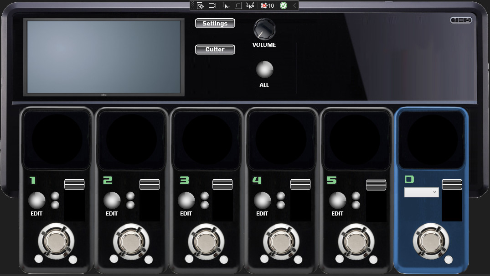

SLOOPER
This LooperSoftware is available as a destop version and an Android version.
Record samples or use already existing samples and loop them to create your own sound.
Save the complete sets to use them later again.
The Desktop version is written in C#/WPF and the Android version in Xamarin/C#.
Find it here on GitHub.
